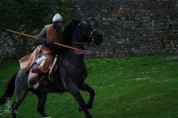
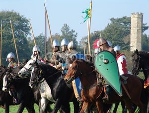
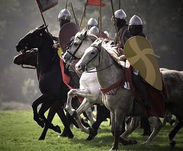

Caballero andante
 De: La Frikipedia, la enciclopedia extremadamente seria.
De: La Frikipedia, la enciclopedia extremadamente seria.
De la serie grandes personajes:
¡¡Santiago y Cierra España!!
| Nacimiento
|
Mucho antes de que los Reyes Católicos y los inventores de la pólvora los sodomizasen.
|
| Muerte
|
Durante una de las 95949699 guerras entre los reyes.
|
| Ocupación
|
Filósofo, sociólogo, asesino, juez, aventurero, juerguista,
|
| Nacionalidad
|
Europea y Árabe.
|
| Malo o bueno
|
Según la TV, la escuela, la religión y los gobiernos fachas, era buenísimo.
|
| Atentados contra la humanidad
|
No haber sabido elegir bien a qué señor feudal servir
|
| Religión
|
El Opio del Pueblo
|
| Notas
|
Aunque no lo creas, eran todos castos y se afeitaban todos los días.
|
«El caballero andante es un animal de cresta metálica que habitan los castillos y de vez en cuando baja al llano al grito de ¡rediós! atacando al hombre»
~ Maquiavelo sobre el caballerismo
El caballero andante es un asesino en serie que vaga por el mundo buscando peleas, destruyendo injusticias y protegiendo a los desfavorecidos: banqueros, políticos, terroristas...
Historia
 Un caballero andante cristiano a punto de inventar el pincho moruno.
 Varios caballeros andantes emigrando a China para convertirla en una República Popular Democrática
Todos los caballeros andantes suelen nacer así:
- Sus padres son incestuosos: por eso a veces dejan el niño abandonado a las fieras y los salva algún señor feudal.
- Desde pequeño demuestra grandes dotes con el pene y cuando es adolescente odia la saga Crepúsculo porque lo suyo es matar criaturas demoníacas.
El caballero andante crecerá dentro de un castillo, donde lo único que verá es cómo matan personas y cómo les intentan matar a ellos, por lo que todo caballero andante será un asesino en serie de mayor.
Como nacieron solos siempre buscarán la cercanía de otros frikis como ellos y formarán una "orden de caballería", donde los más antiguos en el club serán los más jefes y los que entren más tarde tendrán que pasar por unas serie de actos de humillación antes de que los nombren caballeros.
- Velar armas: tendrán que pasar una noche entera de rodillas delante de sus armas preferidas: AK 47, Axe, libro, lejía...
- Invitar a putas a todos los jefazos de la Orden de caballería, cuanto más caras y putas mejor.
- Aguantar seis días seguidos de fiesta sin usar pastis.
- Matar por lo menos diez pollos de un hachazo, desflorar quince vírgenes en un radio de 3 kilómetros y meterse en una sauna de Chueca desnudo y untado en aceite.
- Lavar y fregar con mistol (y sin usar la fregona) el suelo del videoclub donde se reúne la Orden de caballería.
- Ir disfrazado de friki gay a un mitin del PP y de facha nazi a un mitin de IU.
- Entrar en una mezquita y decir que te sodomizaste a Fátima (la hija de Mahoma), entrar en una iglesia católica y decir que eras el novio de Jesús, entrar en una iglesia ortodoxa y decir que eres Rasputín, entrar en una iglesia evangélica y decir que eres Satanás.
- Deberás ir por la calle y enamorarte de la primera jeni que veas y seguir amándola como un masoca amoroso (aunque ella pase de ti o sea fea y obesa).
- Ser nombrado caballero: se pondrán de rodillas (sí, otra vez) delante de un tío viejo y gordo que le pegará con una espada en los hombros durante media hora, si aguanta sin decir ni mu se le nombrará caballero por la gracia de Nyarlathotep.
Grandes caballeros andantes
 Varios caballeros yendo a posar para la revista
Playboy.
- Mahoma: hizo que los árabes se dejasen de fumar tanto gachís y les puso en la historia.
- Saladino: destruyó él solito a todos los caballeros andantes de Francia, Aragón e Inglaterra.
- Arturo: Rey de Inglaterra (antes de que entrasen los ingleses). Mató a tantos que hizo un parlamento de caballeros andantes, pero como al final se le rebotaban tanto los mandó que buscasen el Santo Grial para librarse de ellos.
- Amadís de Gaulicia: Famoso porque cuando se enfadaba talaba bosques de 600 Hectáreas en sun sólo día.
- Roldán (no confundir con el Guardia Civil): se divertía matando españoles musulmanes al mismo tiempo que soplaba por un cuerno. Tras destruir Pamplona los vascos les esperaron en una esquina y le dieron por culo, murió al momento claro está.
- Los 12 pares de Francia: grupo de frikis franceses que les gustaba mucho bajarse al moro y largarse sin pagar el gachís en España (ni los impuestos de Aduana). Fueron abatidos a tiros en los Pirineos por unos pastores pensando que eran jabalíes que les venían a joder la cosecha de millo.
- Carlomagno: conocido por ser el primer usuario del Camino Jacobeo a Compostela.
- Fierabrás: tras ser vencido por uno de los 12 pares de Francia se hizo cristiano e inventó los laxantes (para facilitar lo que ya tu sabes).
- Ganelón: tatarabuelo de Vicente Risco, padre de Vellido Dolfos, traicionó a Fierabrás al denunciarlo a la Inquisición por sodomita, así que también fue torturado por acusica.
- Ricardo Corazón de León: rey de Inglaterra tras darle un golpe de Estado a su padre con la ayuda del rey francés.
- Tirante el Blanco: era el más tonto y metrosexual, por eso murió joven ya que estaba obsesionado con vestirse de blanco, y eso es lo que fue siempre: un blanco humano.
- Tristán de León: famoso por desflorar seis vírgenes en seis minutos consecutivos.
Los caballeros andantes hoy
Actualmente los caballeros andantes ya no andan por ahí buscando gresca, matando monstruos y desencatando princesas; actualmente viven del metal en todas su variantes.
Frikipedia 2005-2016, Licencia
GFDL 1.2 - Extraído por FrikiLeaks